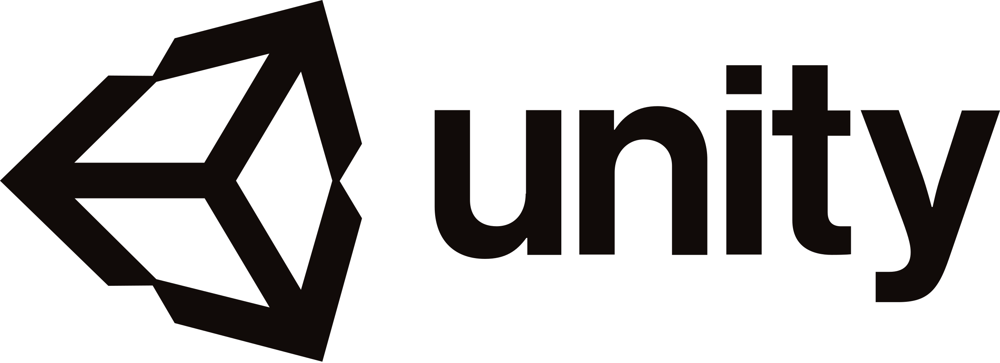

Conoce el equipo detras
Hollow Knight y Hollow Knight Silksong son desarrollados por Team Cherry. Un pequeño grupo independiente originario de Adelaide, Sur de Australia.
Hollow Knight y Hollow Knight Silksong son desarrollados por Team Cherry. Un pequeño grupo independiente originario de Adelaide, Sur de Australia.

Co-director de Team Cherry y responsable del diseño de juego. es quien crea el arte, ambiente y anima cientos de insectos para el juego. Ha participado en el estudio de animación Mechanical Apple y ha trabajado en varios projectos desde peliculas, juegos y videos musicales.

Co-director de team Cherry y diseña el juego junto Ari. el principal encargado de crear enemigos, jefes y el comportamiento de los personajes. William ha diseñado y creado juegos por años, construyendo mundos para ser explorados y conquistados por cientos de jugadores.

Es el talentoso codificador del equipo, se encarga de construir, ajustar y optimizar los sistemas de juego. Estuvo parcialmente involucrado en el primer juego (Hollow Knight) adaptando dicho juego para las consolas y para crear uno de los paquetes de contenido adicional gratuitos, Godmaster.
El desarrollo empezó como un proyecto llamado Hungry Knight, y revelado en Kickstarter para recaudar fondos y poder realizar el juego de sus sueños, donde a medida qué las donaciones se sumaban iban agregando características y ampliando la producción del juego.

Todo el juego fue desarrollado con Unity, el motor de videojuegos multiplataforma creado por Unity Technologies. Lo más interesante es que todo el arte, diseño de personajes y animaciones básicas fue creado a mano.
Usando herramientas de diseño 2D en un ambiente 3D fue como construyeron los distintos niveles y la interacción con enemigos y el entorno.